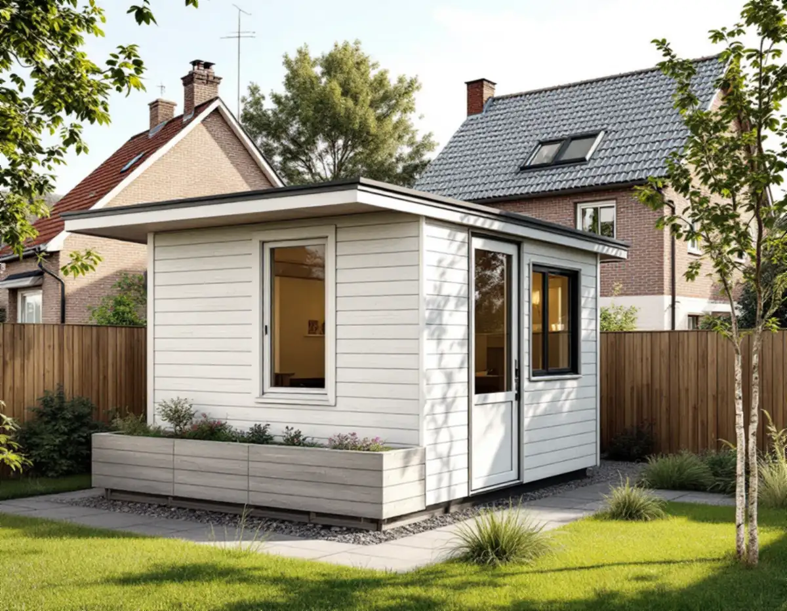
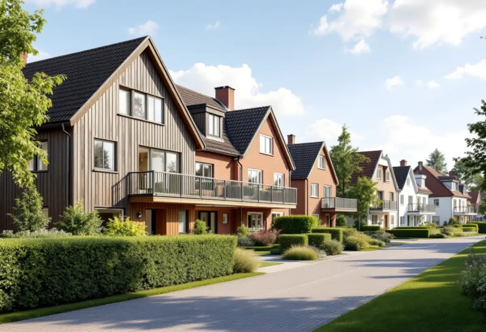

Gränserna
Tomtens gränser och befintliga ledningar ritas in på en karta.
I Hässelby villastad är de flesta bostäder småhus med äganderätt, och många tomter har delats genom åren. Det gör gränserna till den viktigaste frågan för ett attefallshus här. Geal Entreprenad AB mäter tomten, tar fram underlaget för grannarna och bygger huset nyckelfärdigt.

Enligt stadens områdesfakta för 2025 finns 7 029 bostäder i Hässelby villastad, och 4 757 av dem är småhus med äganderätt. Vägledningen Varsam utveckling av småhus- och villaområden beskriver hur många villor i Hässelby villastad ersattes av täta grupper av enhetliga småhus på 1960- och 1970-talen, och hur villastäderna sedan har förtätats genom att tomter styckats av. Nya hus på tomter kring 600 kvadratmeter har kompletterat den äldre bebyggelsen.
På en sådan tomt är det sällan ytan som tar slut först. Det är avståndet till gränserna. Ett lovfritt komplementbostadshus ska stå minst 4,5 meter från gränsen mot granne, samfällighet och allmän plats, och på en avstyckad tomt kan det finnas gränser på flera sidor. Vi ritar in huset på en karta med gränserna innan vi pratar storlek.
Hamnar huset närmare gränsen än 4,5 meter behövs ett skriftligt medgivande från alla berörda grannar. Staden skriver att det ska innehålla fastighetsbeteckning, vilken åtgärd det gäller, en situationsplan där huset och avståndet är inritat, och underskrifter. Du ska kunna visa upp medgivandet om ett tillsynsärende uppstår. Gäller det gränsen mot en gata eller park är det oftast staden som ska ge sitt medgivande, och förfrågan skickas till stadsbyggnadskontoret.
Vi tar fram situationsplanen och en enkel fasadskiss så att grannen ser vad det gäller. Får du inte medgivandet kan huset flyttas längre in, göras mindre eller prövas med en bygglovsansökan.
Hässelby villastad är inte markerad som kulturhistoriskt värdefull miljö i vägledningens tabell. Hässelby strand och Hässelby gård, som byggdes som tunnelbanestäder med grupper av rad- och kedjehus längst ut, står däremot som kulturhistoriskt värdefulla. Om din tomt ligger inom en grön eller blå ring i Stadsmuseets karta, eller om huset är blått eller grönt, krävs bygglov även för ett hus som annars är lovfritt.
I tabellen syns också att flera av områdena i Hässelby saknar äldre miljöprogram. Då är kartan och detaljplanen det viktigaste underlaget, och vi kontrollerar båda innan något ritas.
Ska gårdshuset få vatten, avlopp och ventilation behövs en anmälan och ett startbesked innan installationerna görs. Stockholm Vatten och Avfall ska ha en servisanmälan med en ritning över ledningarna. Vattenledningen kopplas efter mätaren i huvudbyggnaden och spillvattnet till den befintliga ledningen på tomten. Dag- och dräneringsvatten från gårdshuset får inte gå till spillvattnet.
På en avstyckad tomt kan befintliga servisledningar ligga nära gränsen eller gå över grannens mark. Det behöver vi veta innan grunden placeras. Har gårdshuset både kök eller pentry och toalett räknas det dessutom som en egen bostad i VA-taxan, och då tillkommer en avgift som ska vara betald innan huset kopplas in. Vi tar med det i tidplanen så att inflyttningen inte väntar på inkopplingen. Måtten och reglerna i sin helhet finns i reglerna för attefallshus, och om du hellre vill bygga ut villan beskriver vi det under tillbyggnad.

Tomtens gränser och befintliga ledningar ritas in på en karta.
Huset placeras så att 4,5 meter hålls, eller medgivanden tas fram.
Hässelby strand och gård kontrolleras i Stadsmuseets karta.
Installationerna anmäls och servisanmälan skickas.
Grund, stomme, tak och installationer fram till nyckelfärdigt.
Huset används när slutbeskedet har kommit.
Skatteverket skriver att det inte går att få rotavdrag för att bygga en helt ny bostad, och inte heller för ett nytt hus, en friggebod, ett garage eller en liknande fristående byggnad. Ett komplementbostadshus står fritt på tomten, så kostnadsförslaget för huset räknas utan avdrag.
Husets storlek och planlösning, kök och badrum, grundläggning, hur långt det är till befintliga ledningar och hur material kan köras in på en smal, avstyckad tomt. Efter ett gratis platsbesök får du ett skriftligt kostnadsförslag.
Komplementbostadshus på tomten.
Attefallshus →Takbyte, takbesiktning och plåtarbeten.
Takläggare i Hässelby →Villastaden, Hässelby strand och gård.
Takrenovering i Hässelby →Källarbadrum, backventil och bostadsrätt.
Badrumsrenovering i Hässelby →Riva, bygga nytt och delad tomt.
Byggföretag i Hässelby →Villastaden och radhusen.
Fasadmålning i Hässelby →Villastad, sommarstugor och grupphus.
Fasadrenovering i Hässelby →Villor, radhus och grupphus.
Fönsterbyte i Hässelby →Radhusen i Hässelby gård.
Fönsterrenovering i Hässelby →Slipa trägolvet – eller lägga nytt.
Golvläggare i Hässelby →Golvet under mattan.
Golvslipning i Hässelby →Kök i villor och radhus.
Köksrenovering i Hässelby →Villastad, grupphus och radhus i Hässelby.
Målare i Hässelby →Plåttak efter eternit, rännor och beslag i Hässelby.
Plåtslagare i Hässelby →Altan, bod och plank i villastaden och radhusen.
Snickare i Hässelby →Eternit och asbest på taket.
Takbyte i Hässelby →Ny tapet i grupphus och villor.
Tapetsering i Hässelby →Hus som vuxit i omgångar.
Tillbyggnad i Hässelby →Grupphusen, eterniten och ventilationen.
Totalrenovering i Hässelby →